.jpg){kind=link}


.jpg){kind=link}

.jpg){kind=link}


Buenos Aires
Alvear Palace Hotel
Hotel on Avenida Alvear in Buenos Aires, with French-inspired rooms and suites, several restaurants and bars, spa facilities and a rooftop bar.
Check roomsOfficial hotel website · opens in a new tab
South America / A place to get to know
Tango streets, Andean vineyards and Patagonia's vast landscapes

Welcome to Argentina
Argentina stretches from subtropical forest at Iguazú to glaciers and windswept landscapes in Patagonia. Buenos Aires adds grand theatres, neighbourhood football and tango to a country with strong regional food and wine traditions.
Explore a little further
Landmarks, landscapes and the stories behind them. Select a photograph for a closer look.
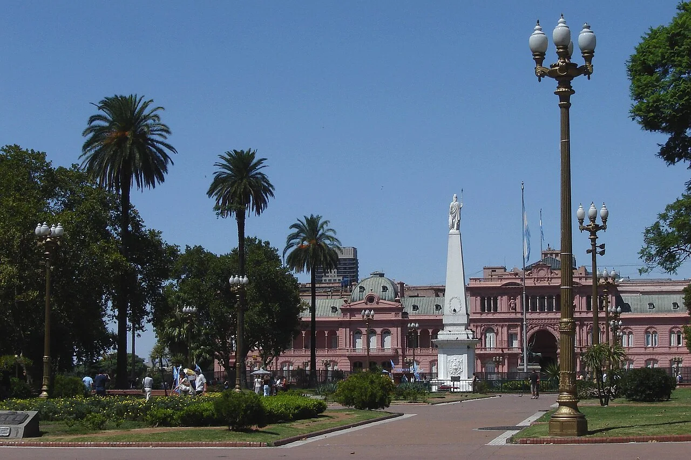
Buenos Aires' oldest square has been a setting for major political events and public demonstrations. The Casa Rosada, Metropolitan Cathedral and historic Cabildo stand around its edges.
Eurico Zimbres · CC BY-SA 2.5 . Resized as needed and converted to WebP. No crop.
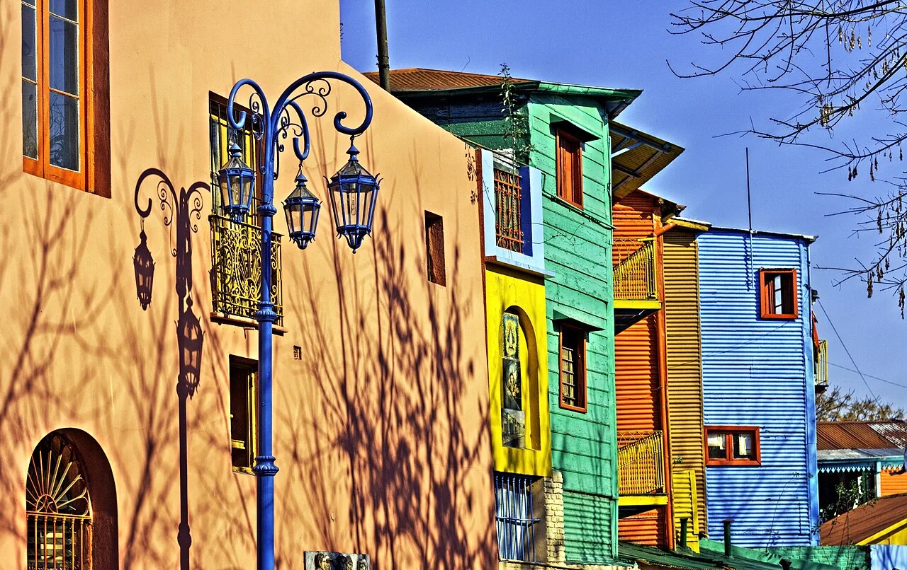
Caminito is a short street museum in La Boca, known for colourful corrugated-metal houses and its connection with artist Benito Quinquela Martín. Its streetscape recalls the neighbourhood's working-class port history.
Luis Argerich · CC BY 2.0 . Resized as needed and converted to WebP. No crop.
A great ice front reaches Lago Argentino within Los Glaciares National Park. Viewing walkways reveal the glacier's crevassed surface and the meeting point between ice, lake and Patagonian forest.
Fernando · CC BY-SA 4.0 . Resized as needed and converted to WebP. No crop.
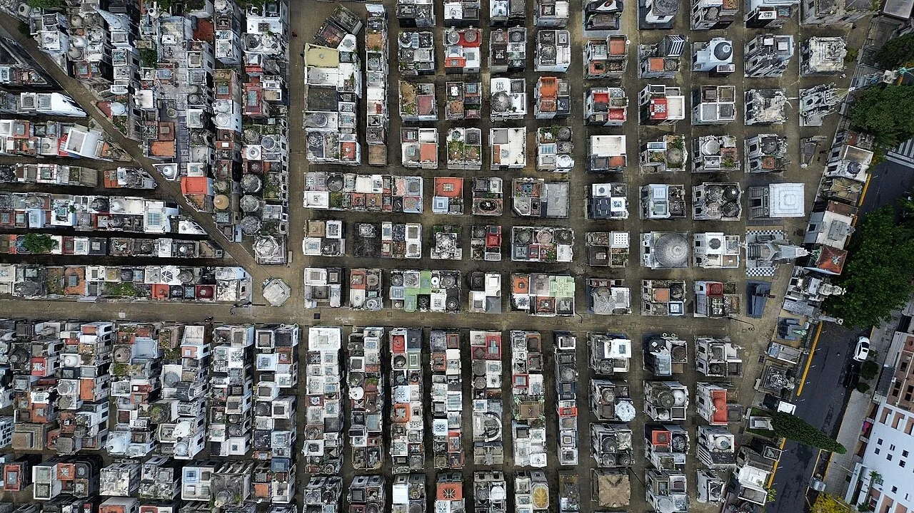
Ornate mausoleums and sculpted memorials form a compact city of tombs in Buenos Aires. Eva Perón's resting place is among the cemetery's best-known sites, alongside many other prominent Argentines.
ProtoplasmaKid · CC BY-SA 4.0 . Resized as needed and converted to WebP. No crop.
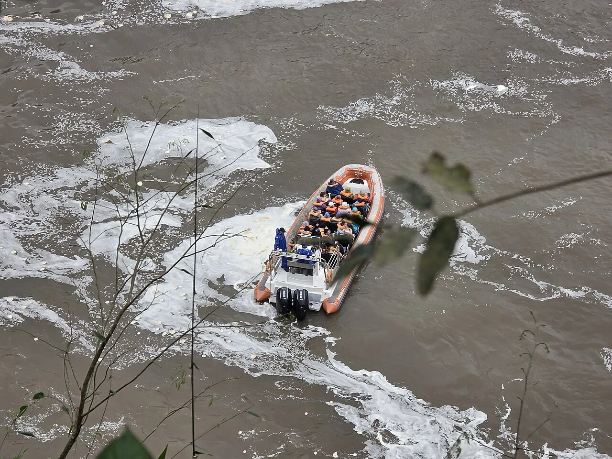
Subtropical forest surrounds the Argentine side of the Iguazú waterfalls. The park protects a rich natural landscape, with visitor walkways offering different perspectives on the river and its cascades.
Horacio Cambeiro · CC BY 4.0 . Resized as needed and converted to WebP. No crop.
Explore a little further
Tango grew from the urban cultures of the Río de la Plata and remains closely associated with Buenos Aires. Theatre, visual art and football also shape the capital's neighbourhood identities.
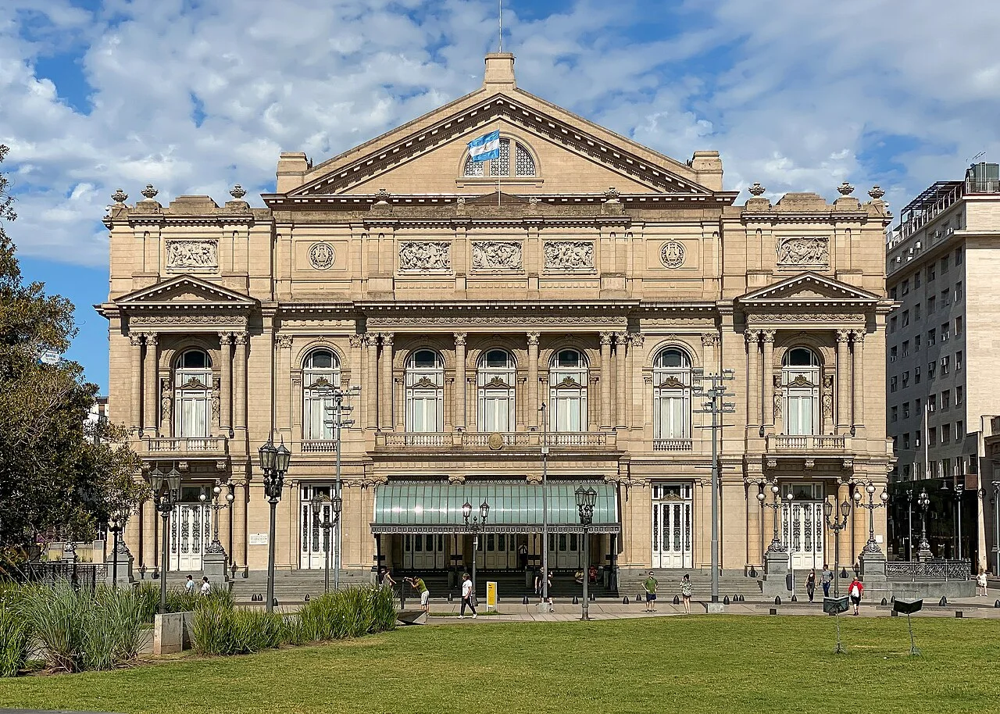
Teatro Colón
EEJCC · CC0 . Resized as needed and converted to WebP. No crop.
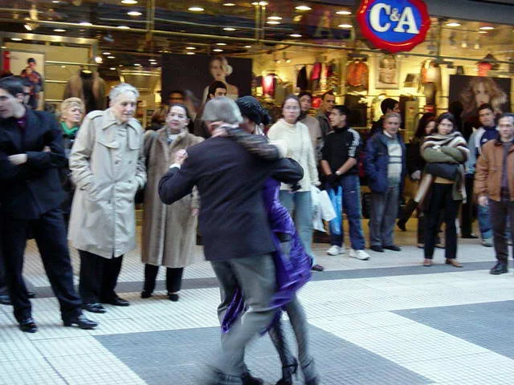
Tango in Buenos Aires
The original uploader was Chmouel at English Wikipedia . · CC BY-SA 3.0 . Resized as needed and converted to WebP. No crop.
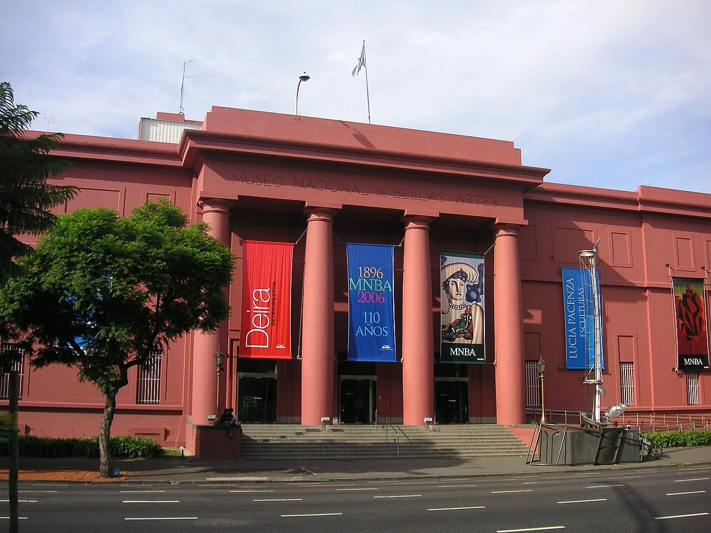
Museo Nacional de Bellas Artes (Buenos Aires)
Beatrice Murch · CC BY-SA 2.0 . Resized as needed and converted to WebP. No crop.
Explore a little further
Argentine food ranges from shared asado grills and regional empanadas to dulce de leche sweets, with Mendoza central to its wine culture.
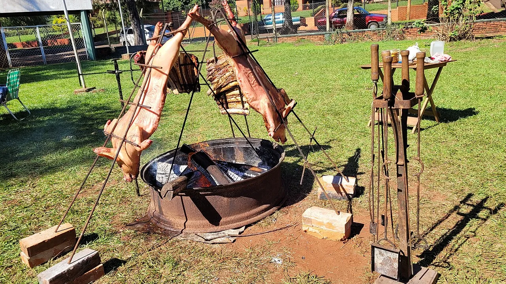
Asado is both a meal of meats cooked over a grill or embers and a social gathering centred on sharing the food.
Horacio Cambeiro · CC BY-SA 4.0 . Resized as needed and converted to WebP. No crop.
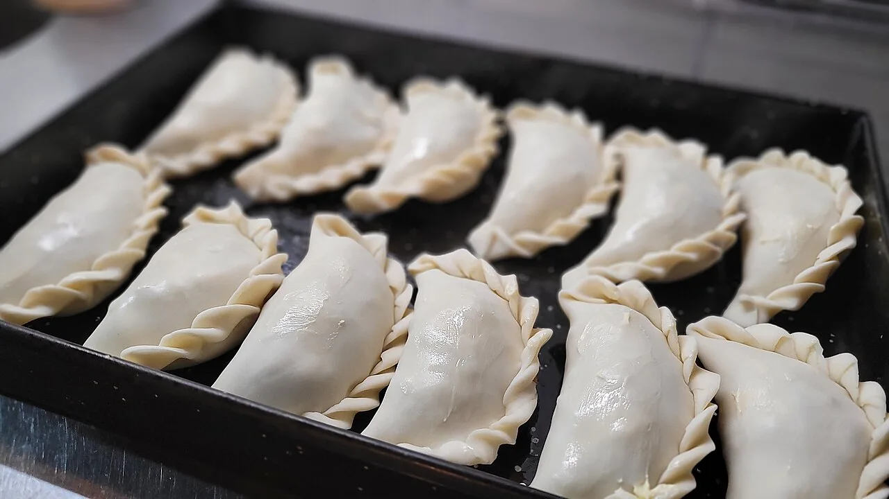
These filled pastry turnovers vary by province, with seasoned meat among the most familiar fillings and baking or frying used in different traditions.
Horacio Cambeiro · CC BY-SA 4.0 . Resized as needed and converted to WebP. No crop.
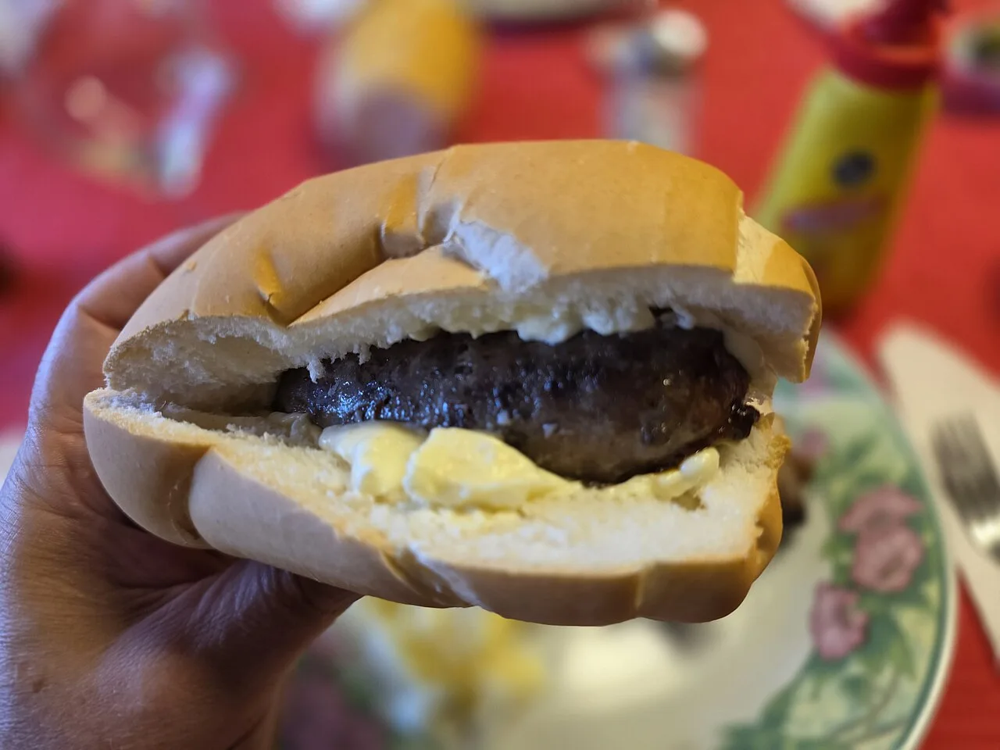
Choripán pairs grilled chorizo sausage with bread and is often dressed with chimichurri.
Horacio Cambeiro · CC BY 3.0 . Resized as needed and converted to WebP. No crop.
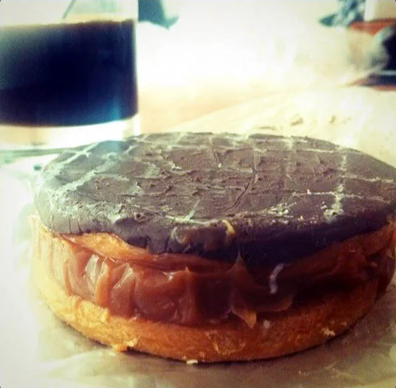
An alfajor sandwiches a sweet filling, commonly dulce de leche, between biscuits, with chocolate or other coatings in many versions.
Jorge Díaz · CC BY-SA 2.0 . Resized as needed and converted to WebP. No crop.
Explore a little further
Football heritage, river islands and Andean vineyards offer three different ways into Argentina's landscapes and local life.
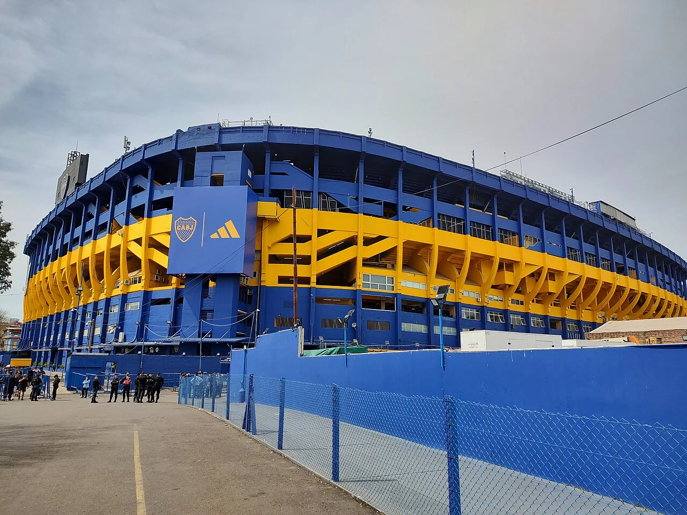
Discover Boca Juniors' football history through the stadium museum and available visitor experiences in the club's La Boca neighbourhood.
Matibro · CC BY-SA 4.0 . Resized as needed and converted to WebP. No crop.
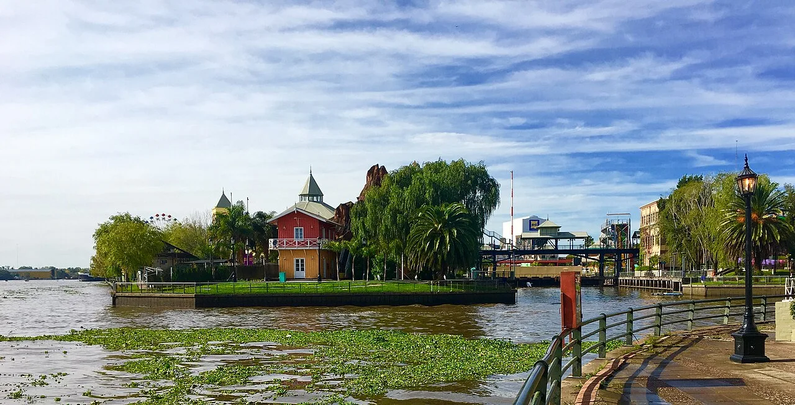
Take an organised boat excursion from Tigre through the Paraná Delta's channels to see riverside homes, islands and wetland vegetation.
Mauro Cacciola from Aci Castello, Sicily · CC BY 2.0 . Resized as needed and converted to WebP. No crop.
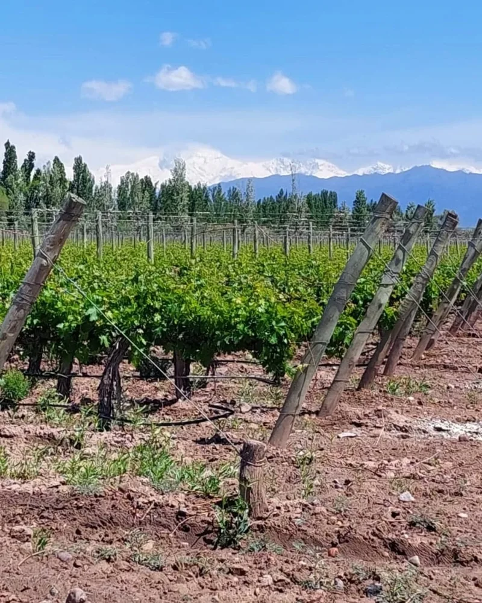
Visit a Mendoza winery to learn about grape growing and winemaking in the dry Andean foothills, where irrigation sustains the vineyards.
MendozaGuide · CC BY 4.0 . Resized as needed and converted to WebP. No crop.
Explore a little further
Buenos Aires offers tango performances and late dining, while Puerto Madero's converted docks provide a waterfront setting for an evening stroll.
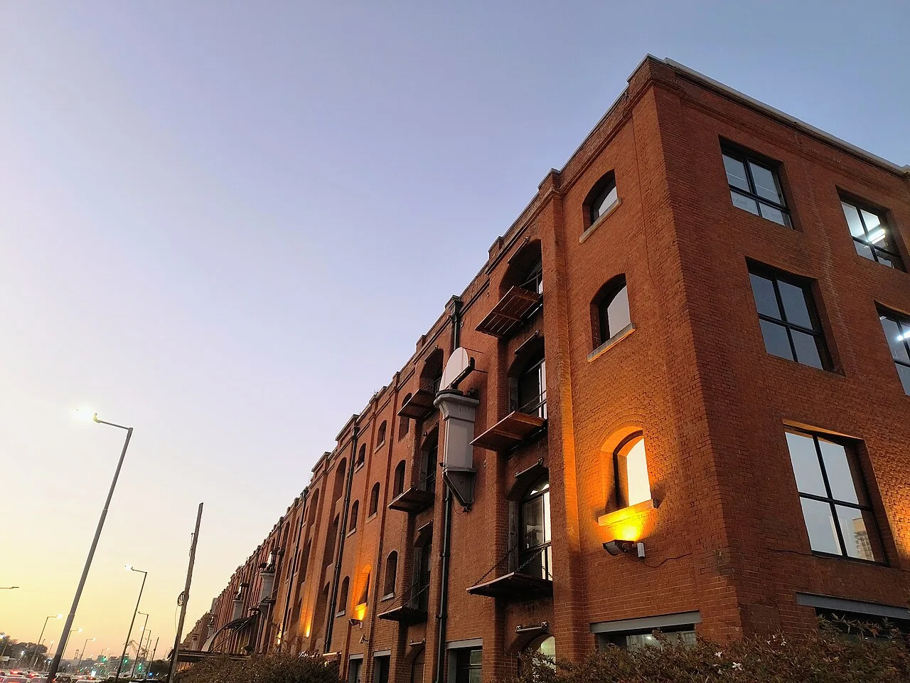
Puerto Madero
Vlasta x · CC BY-SA 4.0 . Resized as needed and converted to WebP. No crop.
Puente de la Mujer
Aleksandrs Timofejev… · CC BY 3.0 . Resized as needed and converted to WebP. No crop.
Explore a little further
A country overview with selected attraction markers. Use local transport information to plan the route between regions.
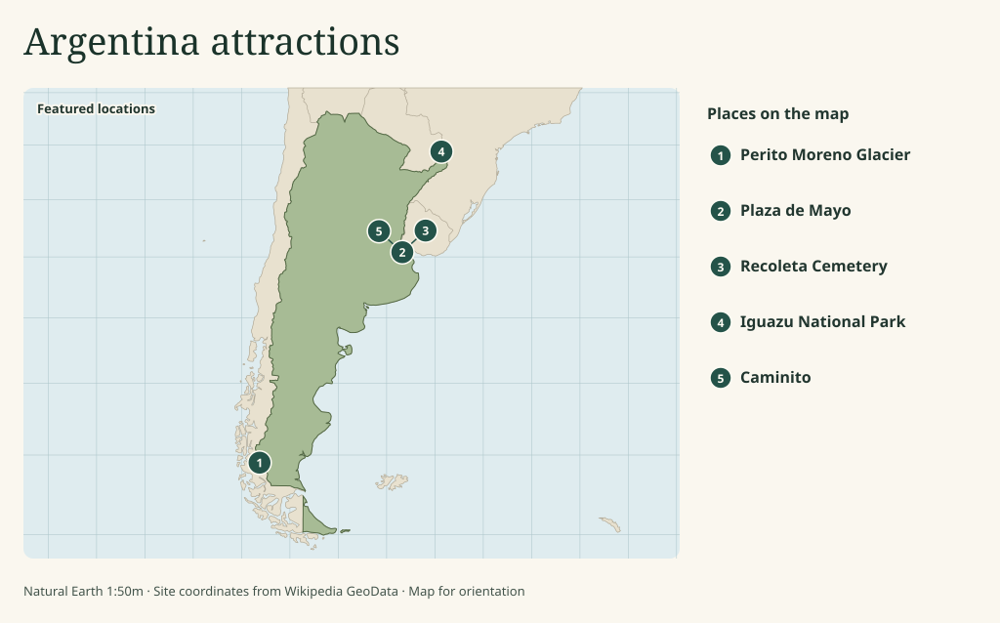
Illustrative overview. Marker locations and map sources are documented below.
A place to settle in
Two places to consider for your trip. Check room choices, current prices and availability directly with each hotel.
Buenos Aires
Hotel on Avenida Alvear in Buenos Aires, with French-inspired rooms and suites, several restaurants and bars, spa facilities and a rooftop bar.
Check roomsOfficial hotel website · opens in a new tab
Buenos Aires
Boutique hotel in Buenos Aires' Palermo Hollywood neighborhood, with 26 rooms and suites, vertical gardens, a gym and a rooftop with a seasonal hot tub.
Check roomsOfficial hotel website · opens in a new tab
The hotel sets its prices, booking terms and payment currency. Some properties confirm reservations after an enquiry.
Know your money
Get familiar with the local currency and estimate what an amount in your own currency is worth.
Daily reference Rates By Exchange Rate API . The rate date appears with your estimate.
Morning to evening · Argentina
Eurico Zimbres · CC BY-SA 2.5 . Resized as needed and converted to WebP. No crop.
Luis Argerich · CC BY 2.0 . Resized as needed and converted to WebP. No crop.
Vlasta x · CC BY-SA 4.0 . Resized as needed and converted to WebP. No crop.
Suggested order and approximate times, with breaks for meals and travel. Confirm access, reservations, transport and operating hours locally. Evening photographs do not guarantee an event or performance.
Confirm arrangements with the official visitor resource .
Visitor resource: https://www.argentina.travel/en
Guide: Atlas & Away · Argentina · researched 18 November 2026.
Explore a little further
A starter in Spanish. The pronunciation hints are approximate; listen to local speakers and ask politely when unsure.
| Phrase | Meaning | Say it approximately |
|---|---|---|
| Buenos días. | Good morning. | — |
| Bien, gracias. | I’m fine, thank you. | — |
| ¿Cuánto cuesta? | How much is it? | — |
| ¿Habla inglés? | Do you speak English? | — |
| La cuenta, por favor. | The bill, please. | — |
A little preparation
0 of 4 preparations complete
Saved places and checklists use this browser’s local storage. They are not an account or a booking.
Before you go
The example itinerary stays around Buenos Aires. The full country guide covers several regions; allow extra days and transport for places beyond that route.
Use the Hotels section to open a property’s official website and check rooms, prices and booking terms. You complete any reservation and payment with the hotel.
Open the enquiry page or email profannan712@gmail.com .
Guide researched on 18 November 2026. Text and code were developed with ChatGPT/Codex assistance for this student learning project.
Phrase reference: Spanish phrasebook .
Natural Earth (base data), ChatGPT in Codex (map design) · Public-domain Natural Earth base data . Projected Natural Earth boundaries, added labels and site markers, and exported SVG.